I feel like I've been writing non-stop event reports lately!! For the last 2 months, it's felt like I finished one up and there's another one to start within the week! I'm not coming to you with another event report but instead a review of Chicago!
I've never been to Chicago before but I was given the opportunity to go to attend a wedding last month. I don't know anything about Chicago except my mom likes the band.
Packing and hauling my luggage was super easy!! I didn't bring my camera or Hina so dragging my cr*p around was nearly painless.
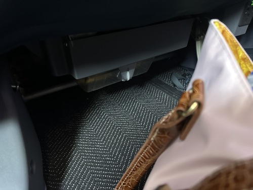
Whatever you do, do NOT sit in the middle seat on any United flight!!! There's some big ass box under there in the exit row that makes it only usable if you have a very flat bag. There's a little more room outside the exit rows, but there's still junk down there taking up your precious space. At least no flight attendants confronted me on my bag not being under the seat.
We flew into the O'Hare airport which was supposedly worse than LAX (wholly untrue). If you're ever there and you don't check out Sky's the Limit by Michael Hayden, you're really missing out!
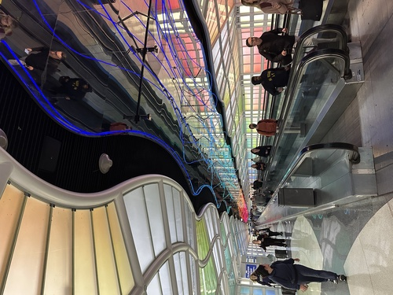
It looked like all the lighting were white light tubing with colored wraps over them. I could see the colored tubing flaking off in many places. It was installed in 1987 so it's seen a few years, but I wish the lighting was better maintained.
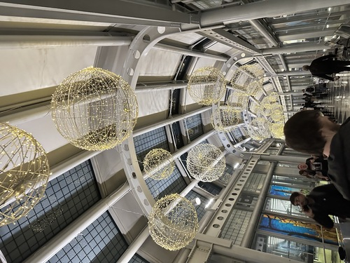
The drivers we had were all very adept at avoiding the plentiful potholes in the street. It was a very strange ride until I realized what he was doing.
The houses are all very rectangular. Most of them have different front facades, but they are almost exclusively box shaped buildings that extend deep into the plot of land.
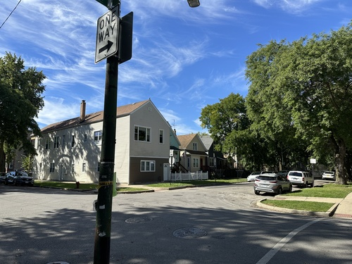
A lot of buildings have wires jungles tacked to the outsides of the buildings. This particular example is very tame. Apartment buildings went WILD with wires everywhere.
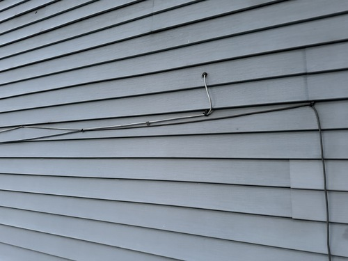
We stayed in an AirBNB which was converted from a church. I've now looked up the building in its previous state and I would have mistaken it for a bodega.
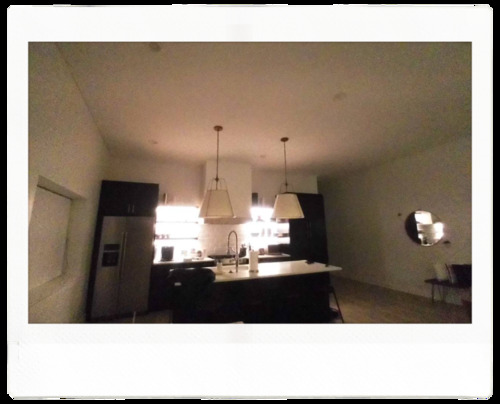
I know everyone loves seeing AirBNB questionable decor.
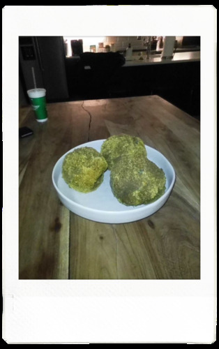
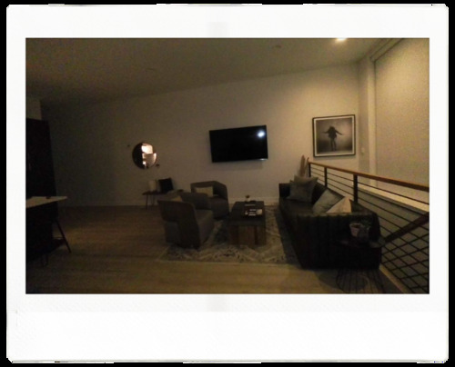
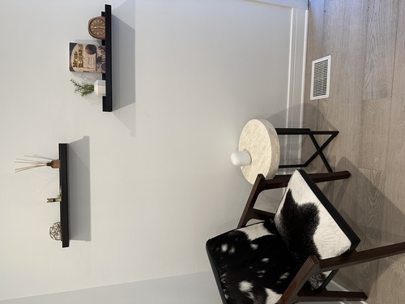
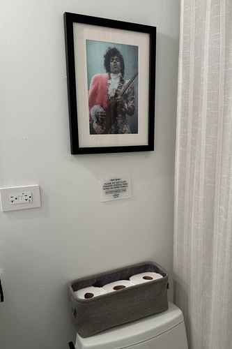
It was actually pretty tame in my limited AirBNB experience.
I went out for a short walk alone. I went to my first Dollar General and found they sold items such as $20 sheet sets.
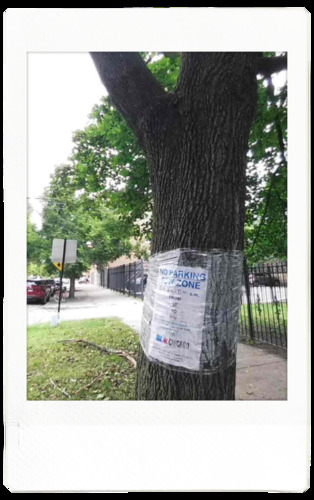
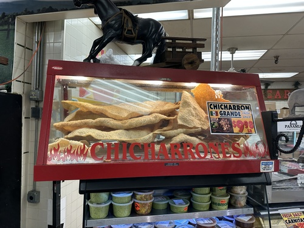
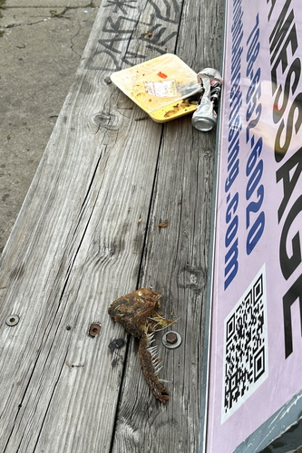
I got to watch an episode of Live PD from the AirBNB! A grandma outside with a 8 year old girl was standing outside a house yelling at the person in the 2nd story window. I wasn't really sure what she was saying until she started yelling "FUCK YOU!! FUCK YOU!!" I went inside and maybe 15 minutes later I hear sirens. I ran up the stairs to look out the window and if you can believe it, the cops were there!!! They diffused the situation calmly.
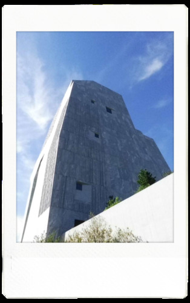
We took a trip to the Obamalisk. Admission to the museum was too exclusive and we weren't able to get tickets. Apparently, the tickets were booked out until next year! We were able to tour the public areas of the buildings and grounds.
There was a vegetable garden with a very slim selection of plants growing in it. I was really shocked at the lack of variety!
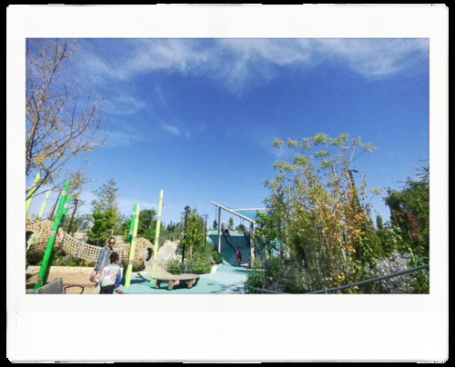
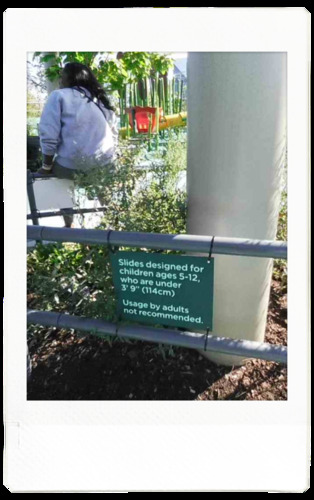
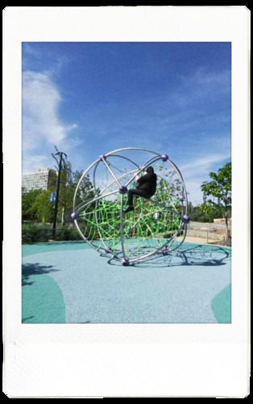
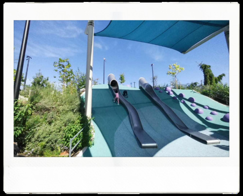
There was a lot of vartiety in the playground equipment! It was a pretty decent one!
We couldn't get into Home Court because of a private event.
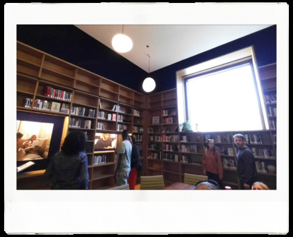
There were plenty of books to read the spines of at his branch of the public library.
Over in the 'Lisk, we checked out the building including the gift shop. They do have you go through a security check to get in.
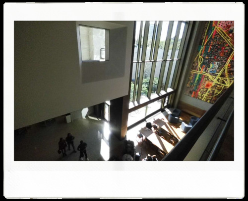
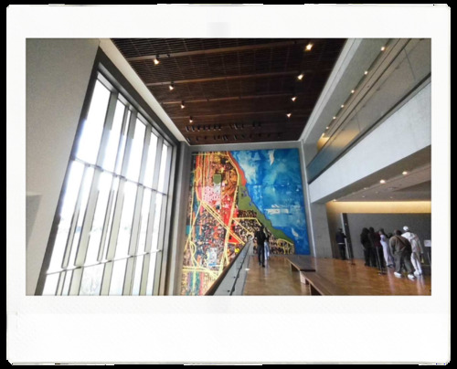
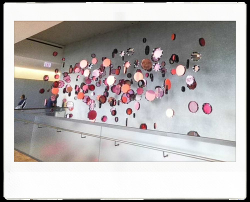
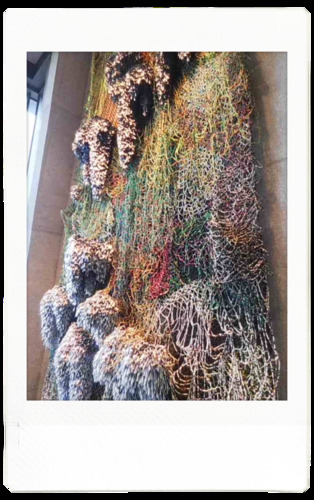
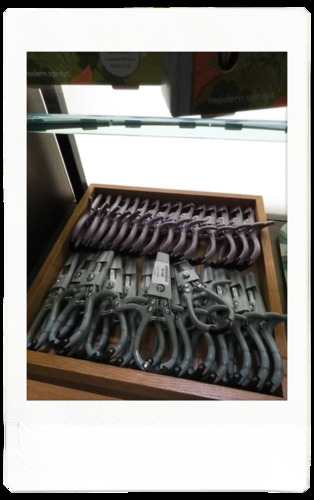
Outside, they had a Wet Rock installation.
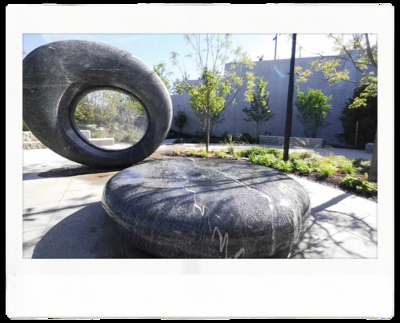
Across the street, they even had a row of shamblers selling unofficial goods!
The thing I didn't know about the Obamalisk was that it's 40 minutes out of town!
Back in the neighborhood we were staying, we discovered one Mystery of Chicago, which was an entranceless WingStop!
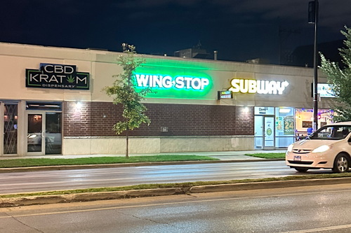
The one place I wanted to go was Atlas Stationers, but we didn't get a chance.
Overall rating: 0/10. I got sick immediately after arriving home.
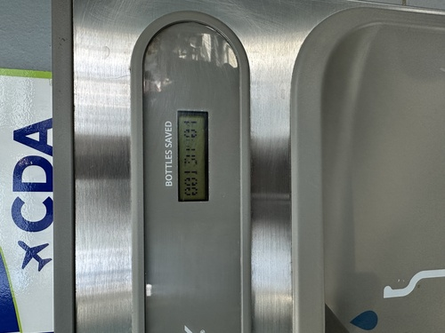